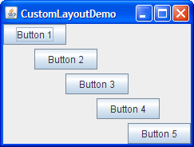
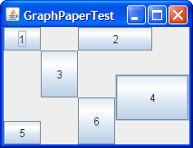

Note: Before you start creating a custom layout manager, make sure that no existing layout manager will work. In particular, layout managers such asGridBagLayout,SpringLayout, andBoxLayoutare flexible enough to work in many cases. You can also find layout managers from other sources, such as from the Internet. Finally, you can simplify layout by grouping components into containers such as invisible panels.To create a custom layout manager, you must create a class that implements the
LayoutManagerinterface. You can either implement it directly, or implement its subinterface,LayoutManager2.Every layout manager must implement at least the following five methods, which are required by the
LayoutManagerinterface:
void addLayoutComponent(String, Component)- Called by the
Containeraddmethods. Layout managers that don't associate strings with their components generally do nothing in this method.
void removeLayoutComponent(Component)- Called by the
ContainerremoveandremoveAllmethods. Many layout managers do nothing in this method, relying instead on querying the container for its components, using theContainermethodgetComponents.
Dimension preferredLayoutSize(Container)- Called by the
ContainergetPreferredSizemethod, which is itself called under a variety of circumstances. This method should calculate and return the ideal size of the container, assuming that the components it contains will be at or above their preferred sizes. This method must take into account the container's internal borders, which are returned by thegetInsetsmethod.
Dimension minimumLayoutSize(Container)- Called by the
ContainergetMinimumSizemethod, which is itself called under a variety of circumstances. This method should calculate and return the minimum size of the container, assuming that the components it contains will be at or above their minimum sizes. This method must take into account the container's internal borders, which are returned by thegetInsetsmethod.
void layoutContainer(Container)- Called when the container is first displayed, and each time its size changes. A layout manager's
layoutContainermethod doesn't actually draw components. It simply invokes each component'ssetSize,setLocation, andsetBoundsmethods to set the component's size and position.This method must take into account the container's internal borders, which are returned by the
getInsetsmethod. If appropriate, it should also take the container's orientation (returned by thegetComponentOrientationmethod) into account. You can't assume that thepreferredLayoutSizeorminimumLayoutSizemethod will be called beforelayoutContaineris called.Besides implementing the preceding five methods, layout managers generally implement at least one public constructor and the
toStringmethod.If you wish to support component constraints, maximum sizes, or alignment, then your layout manager should implement the
LayoutManager2interface. That interface adds five methods to those required byLayoutManager:For more information about these methods, see the
addLayoutComponent(Component, Object)getLayoutAlignmentX(Container)getLayoutAlignmentY(Container)invalidateLayout(Container)maximumLayoutSize(Container)LayoutManager2API documentation.When implementing a layout manager, you might want to use
SizeRequirementsobjects to help you determine the size and position of components. See the source code forBoxLayoutfor an example of usingSizeRequirements.The example CustomLayoutDemo uses a custom layout manager called
DiagonalLayout. You can find the layout manager's source code inDiagonalLayout.java.DialogLayoutlays out components diagonally, from left to right, with one component per row. Here's a picture of CustomLayoutDemo usingDialogLayoutto lay out five buttons.
 You can run CustomLayoutDemo using JavaTM Web Start. Its complete source code is in the example index.
Another example of a custom layout manager is
GraphPaperLayout, which implementsLayoutManager2and lays out components in a grid. You can find its source code inGraphPaperLayout.java. Here is a picture of a rough demo called GraphPaperTest that usesGraphPaperLayout: When a container uses
GraphPaperLayout, the size and location of its child components are specified (using grid units rather than absolute locations) as the components are added to the container. You can set the relative grid size, horizontal space between components, and vertical space between components when initializing the layout manager. You can also change component locations and the grid size dynamically.You can run GraphPaperTest using JavaTM Web Start. You can find its complete source code in the example index.